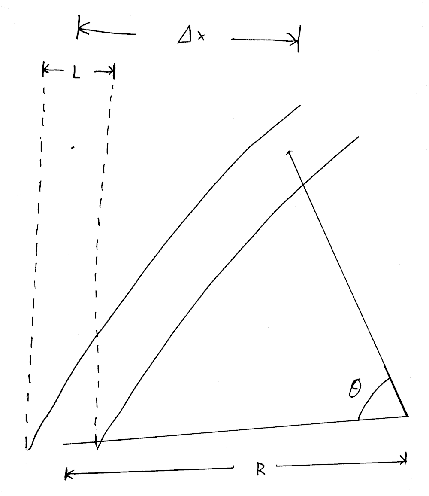
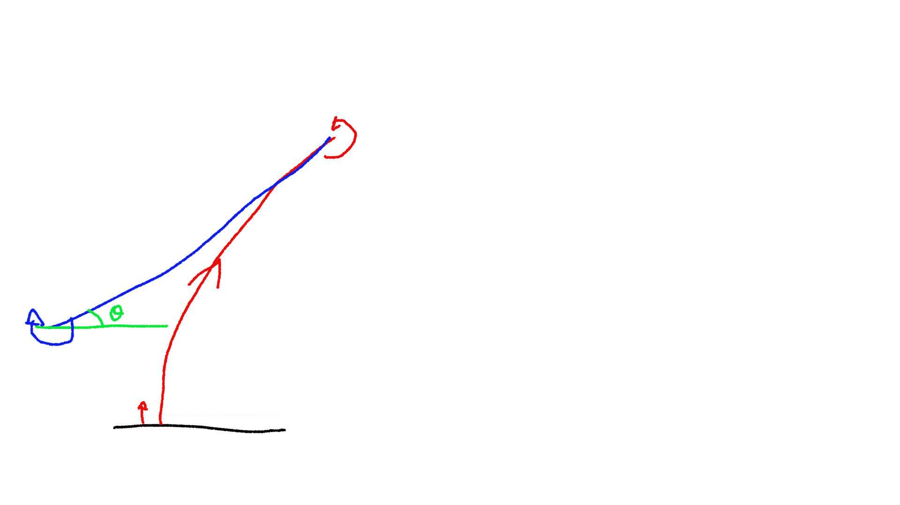

Odometry calibration
Most robots in Eurobot use dead reckoning to position themselves on the playing table. This technique integrates small displacements of the robot to compute the position from a reference point. The issue with integrating is that error accumulates over time, leading to a lack of precision.
Our dead reckoning implementation has three parameters that must be tweaked:
- number of encoder steps per mm,
- distance between the encoders, called the robot's track.
- and finally, the diameter difference between the left encoder's wheel and the right one.
Does wheel diameter error matter ?
If your robot does not have identical wheel diameters, it will believe it moves in a straight line, but will actually follow a circle (see image below).

If we wrte delta_l the distance travelled by the left wheel, delta_r the distance travelled by the right wheel and k the factor between the wheel diameters, we have the following:
delta_l = k * delta_r
delta_r = R * theta
delta_l = (R + L) * theta
-> k * delta_r = (R + L) * delta_r / R
-> R = L / (k - 1)
-> theta = (k - 1) / L
-> delta_x = R * (1 - cos theta)
If we do a numerical evaluation with the following parameters:
L= 30 cm- Wheel diameter error = 0.1%
- DeltaR = 3m (crossing an Eurobot table)
This gives R = 300m, and delta_x, the positioning error is 1.5 cm.
How to calibrate the odometry ?
We developed an automatic procedure to calibrate those three values. Here are what you will need:
- A flat surface, about 2m long.
- A straight edge, attached to the flat surface (for example using clamps).
- Your robot, with tuned PID gains.
- A 2m ruler.
First, configure your dead reckoning code using design values (such as CAD drawings). The goal is not to be precise, but to be roughly able to navigate. Configure your robot for a slow speed, in order to avoid damage and have a good accuracy.
Wheel diameter difference calibration
The first parameter that we will calibrate is the wheel diameter difference. To do so, write a program asking your robot to do the following:

- Move back until the robot hits the straight edge with enough force to be accurate.
- Reset the heading of the robot to zero.
- Move forward as much as possible, we do 1m.
- Turn 180° in one direction.
- Move forward in the same distance.
- Turn -180° (in the other direction).
- Move back until the robot hits the reference edge again.
At this point, we know that we are at the same angle we started at, since we have a solid reference. Any angle observed by the dead reckoning will be the result of the difference in wheel diameter. Any inaccuracy in track would be compensated by doing 180° one way then the other way. Similarly, any inaccuracy in the pulse per mm does not matter. At this point, you can compute the wheel diameter error using the following formula:
// total_distance is the average between the left wheel and right wheel
// distance (0.5 * (left_pulse * left_gain + right_pulse * right_gain)).
// delta_angle is the difference between the pulse count of the left wheel
// and the right wheel, also taking wheel gain into account.
float factor = delta_angle / total_distance;
float new_left_gain = (1. + factor) * old_left_gain;
float new_right_gain = (1. - factor) * old_right_gain;
Once you have a rough working estimation, you can repeat the measurement but repeating steps 3 to 6 a few times to increase the error. We usually stop once the gains start to oscillate around a value, meaning that we hit the resolution limit for the method. Using this approach, we were able to measure very small diameter difference, around 0.05%.
Number of encoder steps per mm
This step is quite trivial to do: we ask the robot to move forward for 2 meters and we measure the real distance it moved. We can then compute the new number of pulses using:
new_pulse_per_mm = old_pulse_per_mm * (real_distance / asked_distance);
This method is accurate to about 0.1% (2 mm over 2 meters), but it is also the least important parameter here.
Track of the robot
For this step we will reuse our reference edge. Program your robot to do the following:
- Go back until it hits the reference edge.
- Reset the heading of the robot.
- Move away from the reference edge enough to be able to rotate.
- Turn 360°
- Move back again until it hits the reference edge.
You can now compute the new track of the robot using the angle measured by the odometry:
// count = number of turns done by the robot, start with 1
float new_track = old_track * (1 + (delta_angle / (2. * M_PI * count)));
Once calibrated you can restart the experiment and do more than one full turn, we usually stop at 10 turns.
Video demo
Nicolas, from team Robotic System made a video to show this procedure, which can be found below. Many thanks to him!
Conclusion
This method, once automated properly, can be done very quickly. The calibration must be redone every time you disassemble the wheelbase, as the track might change.
You can find on Github the code for our track calibration and wheel diameter difference calibration.